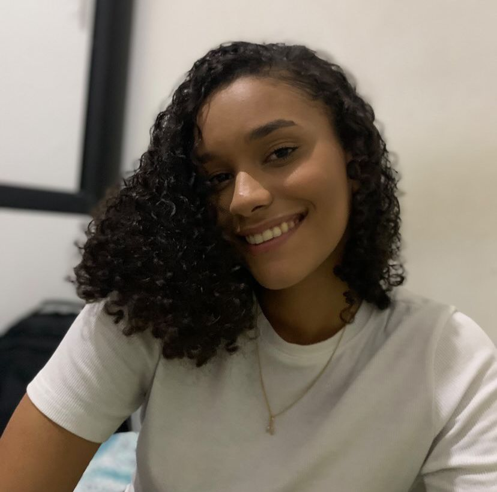

|  |
Estudante e professora de reforço. Faço alguns cursos em áreas da saúde e tecnologia, também dou aula para crianças do meu bairro.😥 |
| DATA | EXPERIÊNCIAS |
| 2019 | Vendas de Doces |
| 2022-2023 | Estágios de Enfermagem |
| 2022-2023 | Aulas de Reforço para crianças |
| 2023 | Vendas de joias de pratas |